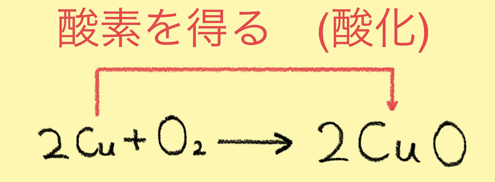
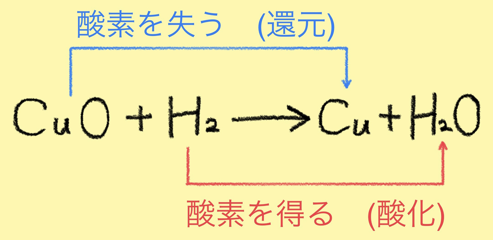

酸化・還元と酸素
銅(Cu)を空気中で加熱すると空気中にある酸素(O₂)と反応して黒色の酸化銅(Ⅱ)CuOになる。
このことを酸化という。
この酸化銅の反応は以下の式で表せる。

一方、加熱した酸化銅CuOを水素H₂が入った試験管に入れると、
Oを失ってCuに戻る。
このような反応のことを還元という。
この酸化銅と水素の反応は以下の式で表せる。

Point!
酸化と還元は同時に起こっている。
このことを酸化還元反応という。
銅(Cu)を空気中で加熱すると空気中にある酸素(O₂)と反応して黒色の酸化銅(Ⅱ)CuOになる。
このことを酸化という。
この酸化銅の反応は以下の式で表せる。
一方、加熱した酸化銅CuOを水素H₂が入った試験管に入れると、
Oを失ってCuに戻る。
このような反応のことを還元という。
この酸化銅と水素の反応は以下の式で表せる。
酸化と還元は同時に起こっている。
このことを酸化還元反応という。
二酸化硫黄SO₂の水溶液に硫酸水素H₂Sを通じると硫黄Sの白色沈殿が発生する。
この時のSO₂はOを失っているので還元されている。
一方、この反応でH₂SはSに変化しているが、酸化と還元は必ず同時に起こることから
H₂Sは酸化されていると考えられる。
水素原子を失った時:その物質は酸化されたという。
水素原子を受け取った時:その物質は還元されたという。
銅が酸化されると酸化銅(Ⅱ)ができる。[2Cu+O₂→2CuO]
この時銅原子は電子e⁻を失ってCu²⁺になり、その電子を酸素原子が受け取ってO²⁻になる。
このようにCuからO₂へ電子が移動して生じたCu²⁺とO²⁻がイオン結合してCuOができる。
物質が電子を失った時:その物質は酸化されたという。
物質が電子を受け取った時:その物質は還元されたという。
熱した銅を塩素に反応させると塩化銅(Ⅱ)が生成される。
この反応を図に表すと、以下のようになる。
電子のやり取りによって酸化・還元を統一的に説明することができる！